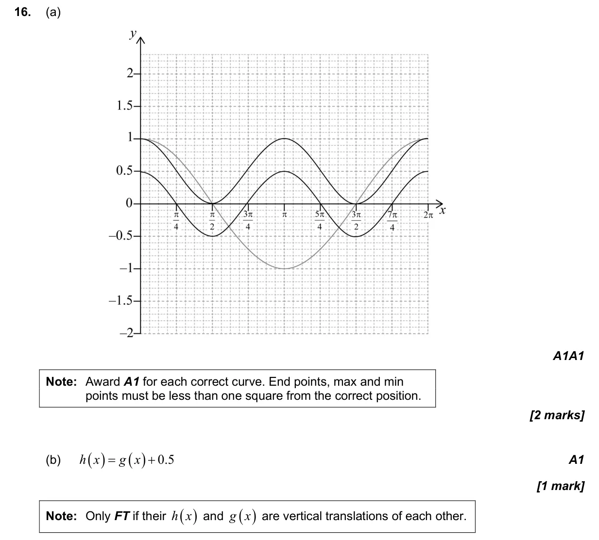
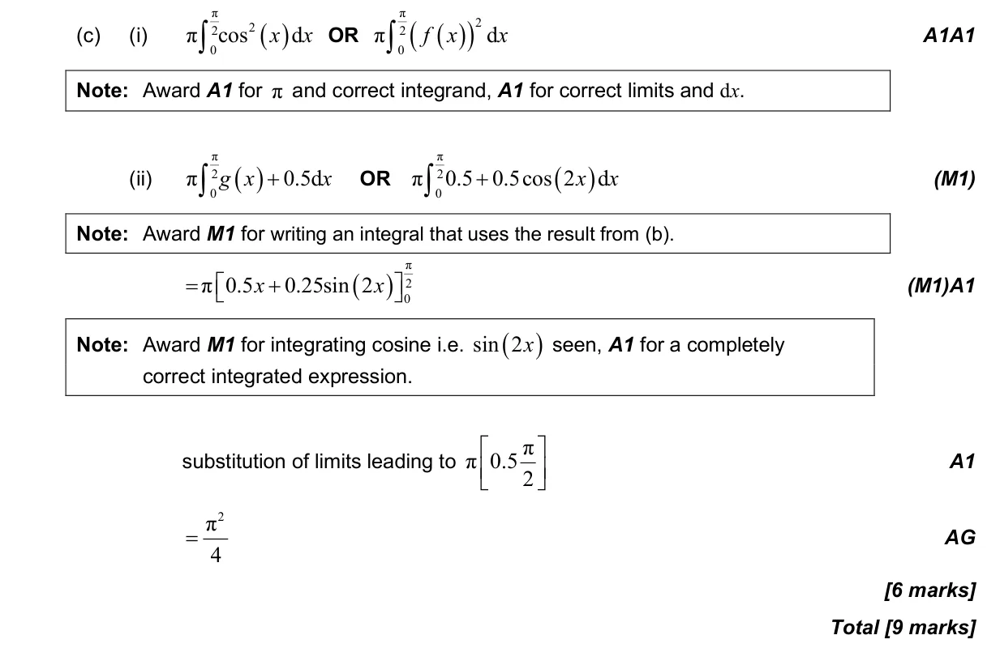

9 marks P1 TZ1 Calculator 5.12 Areas against either axis and volumes of revolution5.11 Further integration: standard integrals, inspection and substitution2.3 Graphs of functions2.8 Transformations of graphs Question Hide breakdown abc Markscheme 